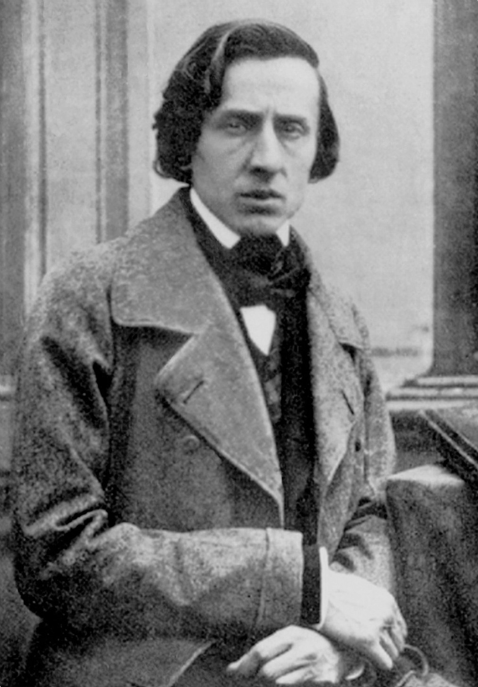
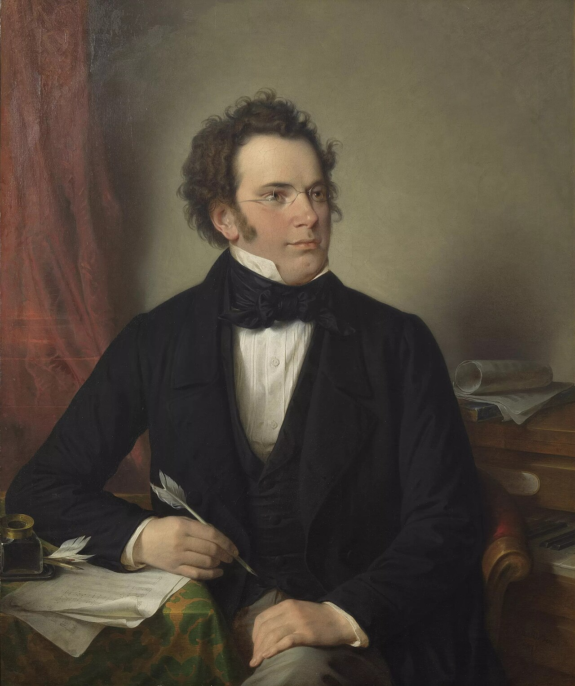
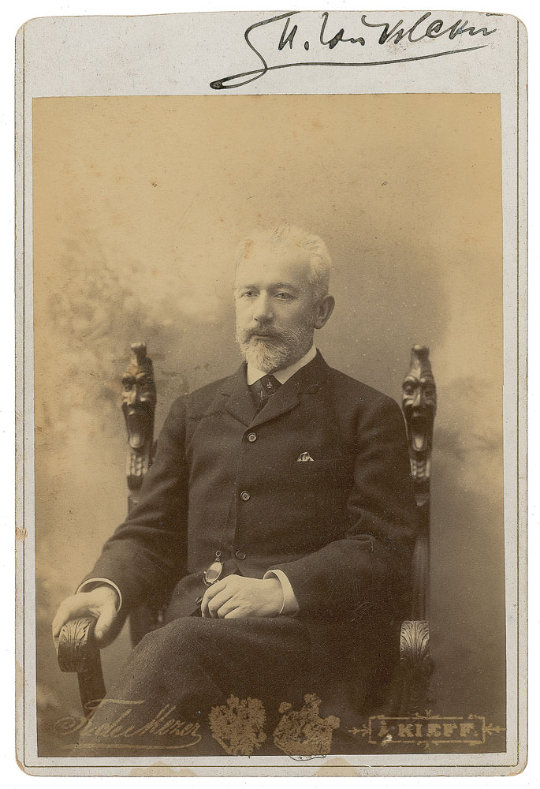
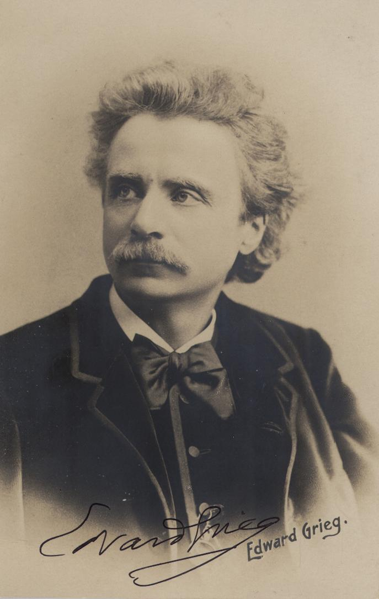

Музыка · 46-бөлім · Романтиктер Music · Section 46 · Romantic Composers Музыка · Раздел 46 · Композиторы-романтики
XIX ғасыр — РОМАНТИЗМ дәуірі: сезім, қиял, арман, табиғат пен ұлттық бояу. Алдыңғы орында — адамның жеке көңіл-күйін, толғанысын білдіру. The 19th century — the era of ROMANTICISM: feeling, fantasy, dreams, nature and national colour. At the centre is the expression of a person's own inner feelings. XIX век — эпоха РОМАНТИЗМА: чувства, фантазия, мечта, природа и национальный колорит. На первом плане — выражение личных переживаний человека.
Романтизм — XIX ғасырдың музыкасы. Бұл — сезім, қиял, арман дәуірі. Romanticism is the music of the 19th century. It is the era of feeling, fantasy and dreams. Романтизм — это музыка XIX века. Это эпоха чувств, фантазии и мечты.
Алдыңғы орында — адамның жеке көңіл-күйі мен толғанысын білдіру. At the centre is the expression of a person's own feelings and inner experiences. На первом плане — выражение личных переживаний человека.
Романтиктер табиғатты жырлайды және ұлттық бояуды (халық әуендерін) жоғары бағалайды. Romantics sing of nature and prize national colour (folk melodies). Романтики воспевают природу и ценят национальный колорит (народные мелодии).
💡 Романтизм — сезім мен қиял дәуірі. Музыка енді тек әдемі форма ғана емес, ол — жан дүниенің тілі. 💡 Romanticism is the era of feeling and fantasy. Music is no longer just a beautiful form — it becomes the language of the soul. 💡 Романтизм — эпоха чувств и фантазии. Музыка теперь не просто красивая форма, а язык души.

1810–1849 · поляк Polish польский
«Фортепиано ақыны». Музыкасының барлығы дерлік — фортепианоға арналған. The "poet of the piano". Almost all of his music is written for the piano. «Поэт фортепиано». Почти вся его музыка — для фортепиано.
🎹 Вальстер, ноктюрндер, мазуркалар, полонездер, этюдтер. 🎹 Waltzes, nocturnes, mazurkas, polonaises, études. 🎹 Вальсы, ноктюрны, мазурки, полонезы, этюды.

1797–1828 · австриялық Austrian австрийский
Романтикалық ӘННІҢ атасы: 600-ден астам ән жазды. The creator of the Romantic SONG: he wrote over 600 songs. Создатель романтической ПЕСНИ: написал более 600 песен.
🎶 «Аве Мария», «Орман патшасы». 🎶 "Ave Maria", "The Erlking". 🎶 «Аве Мария», «Лесной царь».

1840–1893 · орыс Russian русский
Орыс композиторы. Балеттер «Аққу көлі», «Щелкунчик», «Ұйқыдағы аруэ»; симфониялар; «Евгений Онегин» операсы; «Жыл мезгілдері». A Russian composer. Ballets "Swan Lake", "The Nutcracker", "The Sleeping Beauty"; symphonies; the opera "Eugene Onegin"; "The Seasons". Русский композитор. Балеты «Лебединое озеро», «Щелкунчик», «Спящая красавица»; симфонии; опера «Евгений Онегин»; «Времена года».
🩰 Балет музыкасының әлемдегі шебері. 🩰 A world master of ballet music. 🩰 Мировой мастер балетной музыки.

1843–1907 · норвегиялық Norwegian норвежский
Норвегиялық композитор. «Пер Гюнт» сюитасы; жарқын ұлттық бояуы бар. A Norwegian composer. The "Peer Gynt" suite; with vivid national colour. Норвежский композитор. Сюита «Пер Гюнт»; яркий национальный колорит.
🏔️ Норвегия табиғаты мен халық әуендері. 🏔️ Norway's nature and folk melodies. 🏔️ Природа Норвегии и народные мелодии.
Жарқын әуенVivid melodyЯркая мелодия
♪Бай гармонияRich harmonyБогатая гармония
♪БағдарламалықProgrammaticПрограммность
♪Халық интонациясыFolk intonationsНародные интонации
♪🎧 батырманы басып, романтикалық әуенді тыңдаңыз tap the button and hear a Romantic melody нажмите кнопку и послушайте романтическую мелодию
📌 Романтизмде жарқын әуен мен бай гармония басты рөл атқарады. Бағдарламалық музыка белгілі бір бейнені не сюжетті «суреттейді», ал халық интонациялары ұлттық бояу береді. 📌 In Romanticism, a vivid melody and rich harmony play the leading role. Programmatic music "paints" a particular image or story, while folk intonations give national colour. 📌 В романтизме главную роль играют яркая мелодия и богатая гармония. Программная музыка «рисует» определённый образ или сюжет, а народные интонации придают национальный колорит.